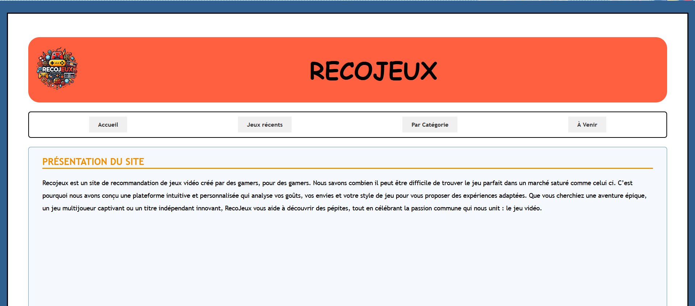
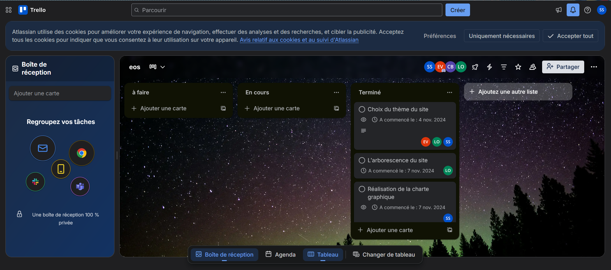
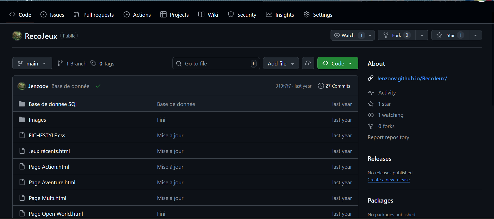
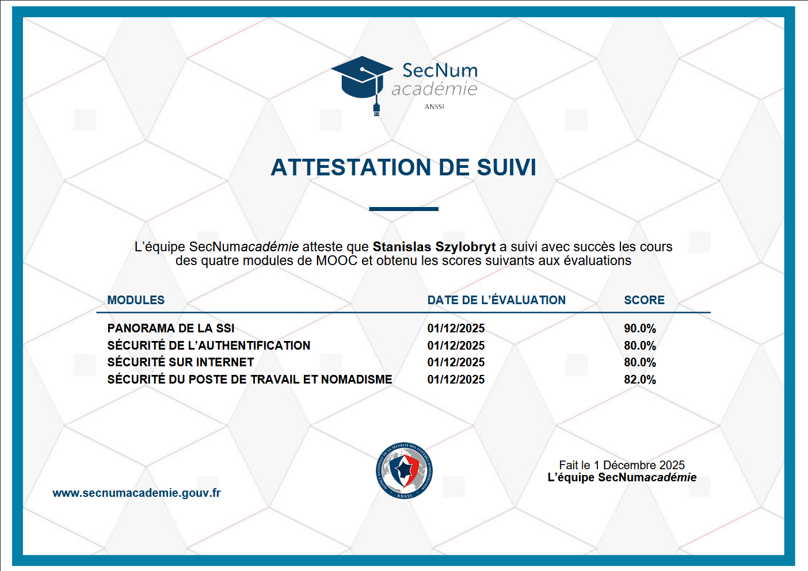
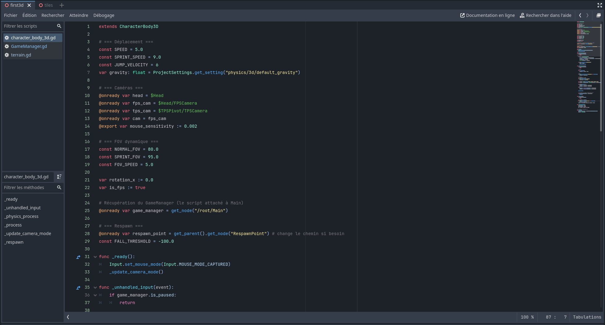
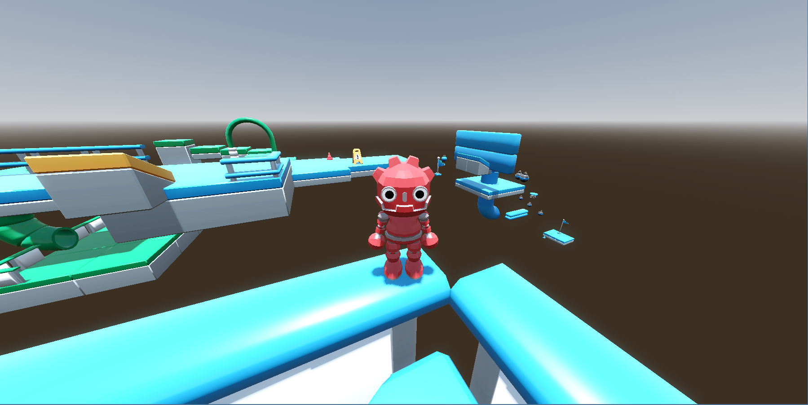

Site web en équipe
Projet collectif - 2025
Bloc 1 - Projet principal
Conception d'un site web en équipe avec organisation du travail, suivi des tâches et versionnement du code.
Compétences mobilisées



Cette page présente mes travaux liés au bloc 1 du BTS SIO SLAM, avec des espaces prêts pour intégrer mes captures d'écran.
Projet collectif - 2025
Bloc 1 - Projet principal
Conception d'un site web en équipe avec organisation du travail, suivi des tâches et versionnement du code.



Certification - Décembre 2025
Bloc 1 - Professionnalisation
Validation de plusieurs modules de cybersécurité pour renforcer les bonnes pratiques SSI et la culture sécurité.

Autoformation continue
Bloc 1 - Montée en compétences
Pratique personnelle sur le développement d'applications et la création de prototypes pour progresser techniquement.

